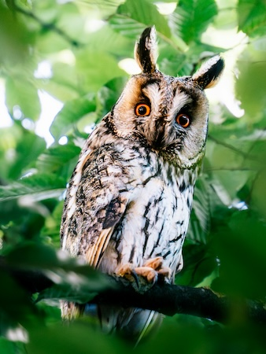
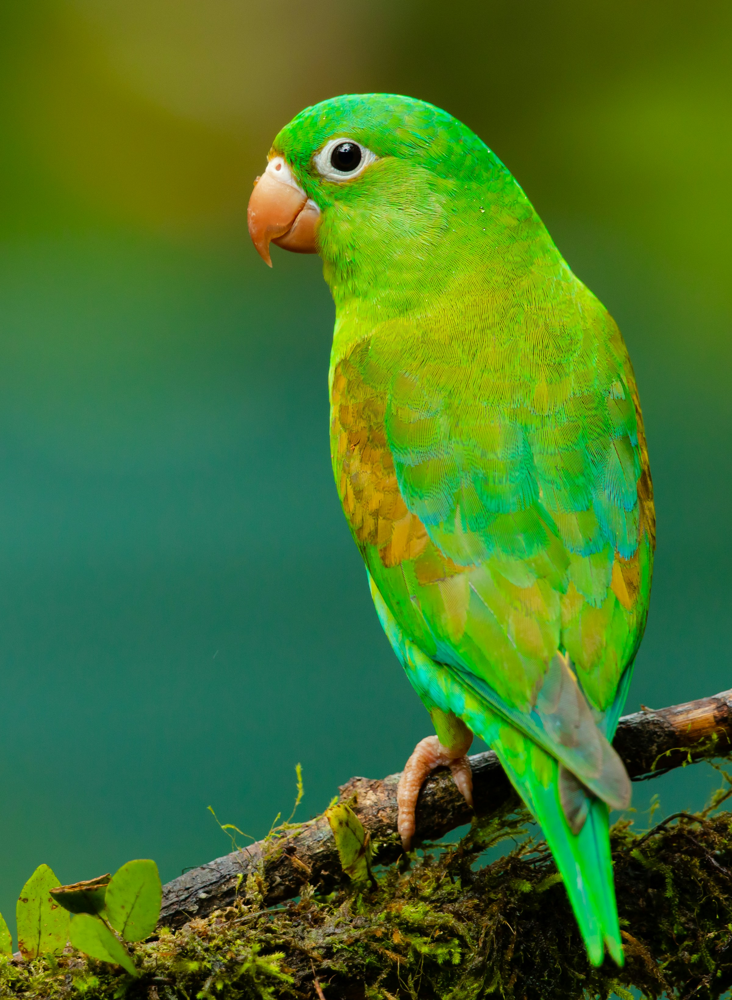
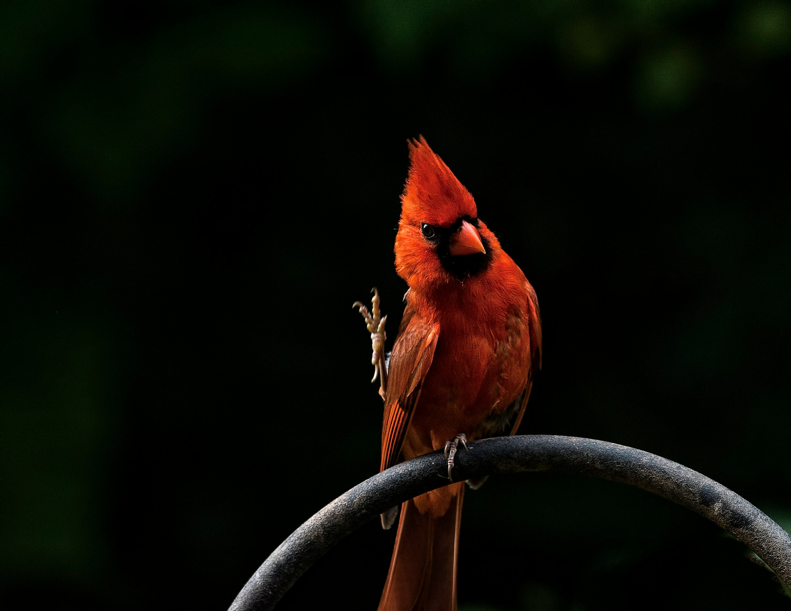

birds

The long-eared owl (Asio otus), also known as the northern long-eared owl or, more informally, as the lesser horned owl or cat owl, is a medium-sized species of owl with an extensive breeding range. The genus name, Asio, is Latin for "horned owl", and the specific epithet, otus, is derived from Greek and refers to a small eared owl. The species breeds in many areas through Europe and the Palearctic, as well as in North America. This species is a part of the larger grouping of owls known as typical owls, of the family Strigidae, which contains most extant species of owl. This owl shows a partiality for semi-open habitats, particularly woodland edge, as they prefer to roost and nest within dense stands of wood but prefer to hunt over open ground. The long-eared owl is a specialized predator, focusing its diet on small rodents, especially voles, which compose most of their diet. Under some circumstances, such as population cycles of their regular prey, arid or insular regional habitats or urbanization, this species can adapt fairly well to a diversity of prey, including birds and insects. The long-eared owl utilizes nests built by other animals, in particular by corvids. Breeding success in this species is correlated with prey populations and predation risks. Unlike many owls, long-eared owls are not strongly territorial or sedentary. They are partially migratory and sometimes characterized as "nomadic". Another characteristic of this species is its partiality for regular roosts shared by a number of long-eared owls at once.The long-eared owl is one of the most widely distributed and most numerous owl species in the world, and due to its very broad range and numbers it is considered a least concern species by the IUCN. Nonetheless, strong declines have been detected for this owl in several parts of its range. Source

The orange-chinned parakeet (Brotogeris jugularis), also known as the Tovi parakeet, is a species of bird in subfamily Arinae of the family Psittacidae, the African and New World parrots. It is found from southern Mexico through Central America into Colombia and Venezuela. Source

Cardinalidae (sometimes referred to as "cardinal-grosbeaks" or simply "cardinals") is a family of New World-endemic passerine birds that consists of cardinals, grosbeaks, and buntings. It also includes several other genera such as the tanager-like Piranga and the warbler-like Granatellus. Membership of this family is not easily defined by a single or even a set of physical characteristics, but instead by molecular work. Among songbirds, they range from average-sized to relatively large and have stout features. Some species have large, heavy bills. Members of this group are beloved for their brilliant red, yellow, or blue plumages seen in many of the breeding males in this family. Most species are monogamous breeders that nest in open-cup nests, with parents taking turns incubating the eggs and taking care of their young. Most are arboreal species, although the dickcissel (Spiza americana) is a ground-dwelling prairie bird. In terms of conservation, most members of this family are considered least concern by the IUCN Red List. However, a few birds, such as the Carrizal seedeater (Amaurospiza carrizalensis), are considered endangered. Source
Flamingos or flamingoes[a] (/fləˈmɪŋɡoʊz/) are a type of wading bird in the family Phoenicopteridae, which is the only extant family in the order Phoenicopteriformes. There are four flamingo species distributed throughout the Americas (including the Caribbean), and two species native to Afro-Eurasia. A group of flamingos is called a "flamboyance", or a "stand". Source